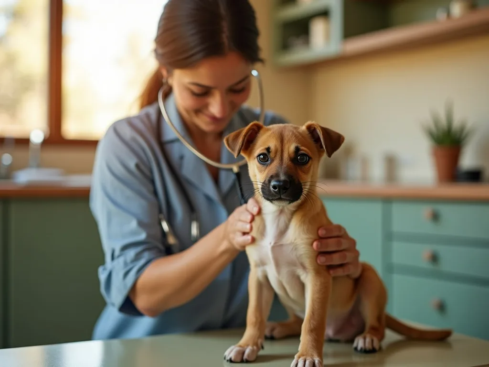
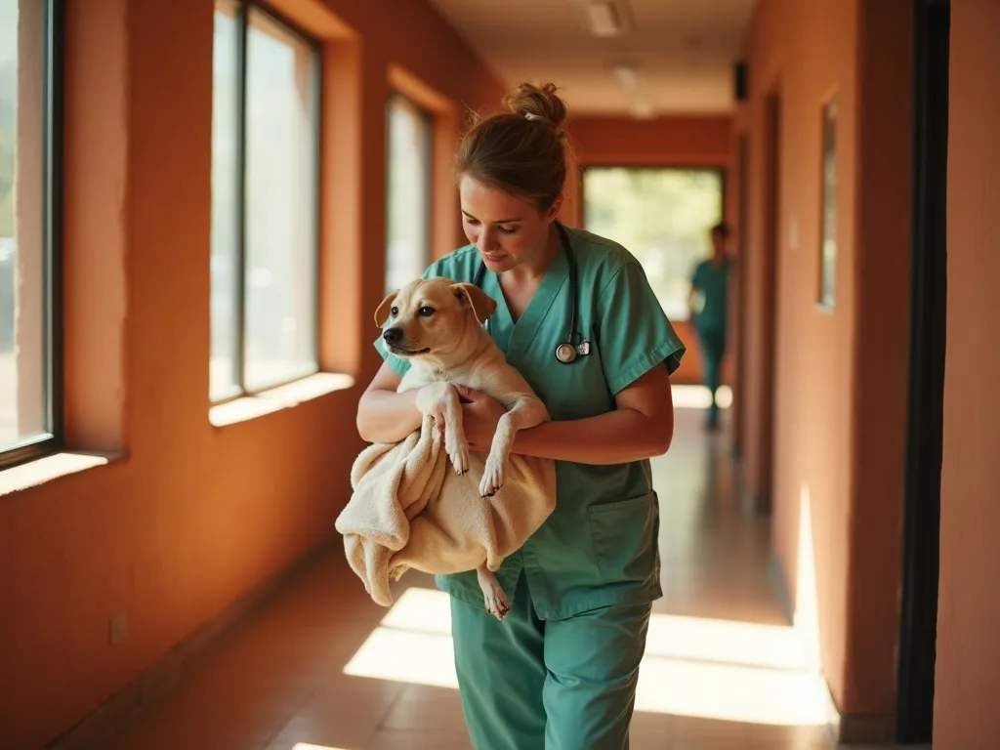

Reptiles
Bearded dragons, leopard geckos, corn and king snakes, tortoises. Mouth rot, MBD, retained sheds, prolapse, egg binding. Every reptile visit includes a husbandry review — most problems we see are enclosure problems.
☉ Open today until 7:00 PM · Walk-ins welcome for urgent care · Se habla español
Wellness, same-day urgent care, surgery and dentistry — for dogs, cats, reptiles, birds and pocket pets. Every exam price published, every plan quoted in writing.

Annual exams, vaccines, microchipping, parasite prevention and senior bloodwork — plus the desert-specific work most guidance leaves out: valley fever screening, heat-conditioning advice for new arrivals, and the rattlesnake vaccine.
Puppy and kitten packages bundle the first year's visits so nothing gets missed and nothing surprises you.

We hold slots open every day — including Saturday and Sunday — for exactly this. Call before noon and we will almost always see you the same day. Walk in with a genuinely sick animal and we will see you regardless.
On-site X-ray and lab mean most answers arrive during the visit rather than next week. We handle heat stroke, snakebite and foreign-body cases routinely, because out here they are routine.
Spay and neuter, dental cleanings and extractions, soft-tissue surgery and mass removals. Anaesthesia is monitored throughout by a dedicated technician — not by whoever happens to be free.
You get a written estimate first, a phone call if anything changes, and same-day discharge wherever it is safe to send them home.
Two of our doctors trained in exotic companion medicine. If another clinic has turned you away, start here.
Bearded dragons, leopard geckos, corn and king snakes, tortoises. Mouth rot, MBD, retained sheds, prolapse, egg binding. Every reptile visit includes a husbandry review — most problems we see are enclosure problems.
Conures, cockatiels, budgies, African greys, lovebirds. Feather-destructive behaviour, respiratory disease, beak and nail work, egg binding. We work them up properly rather than writing it off as "that's parrots".
Rabbits, guinea pigs, rats, hamsters, ferrets. GI stasis, dental spurs, mites, respiratory infection. Rabbits and guinea pigs get a dedicated quiet room away from the dogs.
No venomous species, no primates, no large livestock. If your animal is outside what we can do well, we will say so on the phone and point you at someone who can — rather than book you and find out later.
These are the exam fees — what you pay to be seen and to walk out with a plan. Everything beyond an exam is quoted in writing first, and we call you before any change to that number.
$39
Vaccines, labs, imaging, medication and procedures are priced separately and always quoted before they happen. We accept CareCredit and offer written payment plans on larger surgical estimates — ask us, it is not a secret.
(702) 555-0199 reaches a person here, not an answering service. Tell them what happened; they will tell you honestly whether to come in now, come in today, or go straight to a 24-hour hospital.
Urgent cases are triaged on arrival by a technician. If your pet is stable you may wait behind a more critical animal — we will tell you that honestly rather than leave you guessing.
X-ray and bloodwork run in-house, so most diagnoses land before you leave. You get the estimate in writing, and nothing proceeds until you say so.